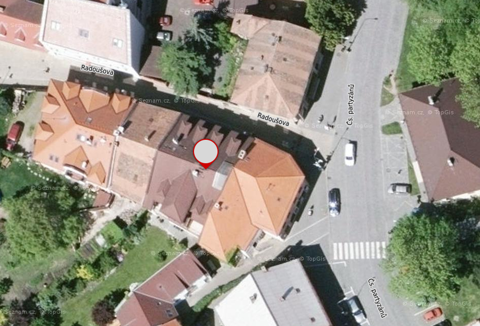

Adresa: Radoušova ulice čp 14, Chrudim
Otevírací doba: Uterý, Čtvrtek a Neděle mezi 17:30 - 19:00

Na místě se můžete těšit na:
• Veřejnou ledničku
• Veřejnou knihovnu společenských věd - seznam literatury
• Freeshop
• Otevřený počítač
Zprávičky:
{% assign cpice = (site.posts) %}
{% assign modulo = 0 %}
{% for cpice in site.categories.cpice reverse %}
{% if modulo == 0 or forloop.first %}
{% endif %}

{% if cpice.autor %}
{{ cpice.autor}} {% endif %}
{% if cpice.date %}
{{ cpice.date | date: "%d.%m.%Y" }} {% endif %}
{% if cpice.excerpt %}{{ cpice.excerpt | truncatewords: 30 }}
{% else %}
{{ cpice.content | strip_html | truncatewords: 30 }}
{% endif %}
více.
{% if modulo == 1 or forloop.last %}